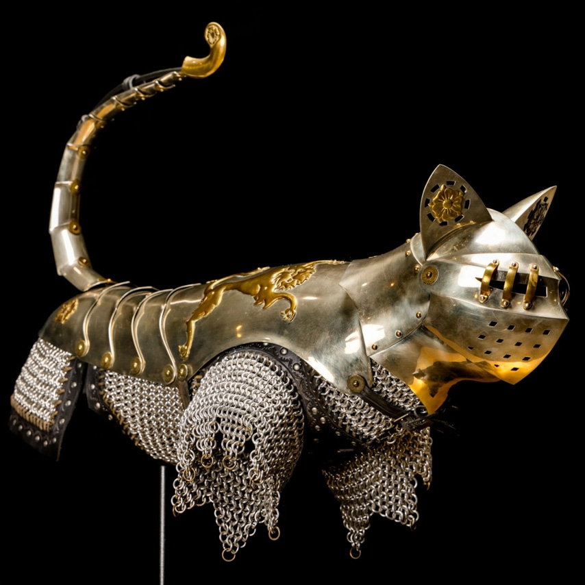

Meet the world's first (and only) cat and mouse armourer
Artist Jeff de Boer has designed and crafted tiny museum–quality armour for decades. How did he find his calling? "It all started with a mouse," he says.
Over that time, de Boer estimates he's created more than 500 suits of animal armour in his Calgary studio, ranging from rodent–size Crusader armour complete with tiny snout-nosed helmets and tail scales, to elaborate medieval Islamic chainmail large enough for your average house cat.
De Boer's inspiration began with a visit to the armour collection at Calgary's Glenbow Museum when he was five years old.
"I think that at a very early age children recognise armour as something interesting, and for me it was really haunting,"
the 59–year–old artist recalls.
De Boer started tooling around in his father's metal fabrication shop and made his first human-size suit of armour in high school. But as a jewellery major in art school in the mid–1980s, he had to somehow reconcile the small scale of the items he was creating with his passion for armour. He could craft armour for people at a miniature size, but that felt inauthentic. What sort of relatively tiny armour could he create that still felt like it had a real purpose? "And then it dawned on me: I could make a suit of armour for a mouse," he recalls. "That was the transitional moment — as Disney said, "It all started with a mouse." As his vision came into focus, de Boer realised he needed to introduce an antagonist into his world of armoured mice. Naturally, it was cats.
Since the artist works on a miniature scale, he creates his own tiny tools and rivets to fashion the armour elements. It can take 40 hours just to make the roughly 5 to 10 custom tools needed to create a particular style of mouse armour, then an additional 30 – 50 hours to create each mouse. Most are crafted from nickel, steel, and/or brass (and sometimes gold or platinum), and finished with flourishes like whiskers or tassels. De Boer stresses that his work is not intended to be worn by living animals.
De Boer says the collectors and other patrons who commission his work have a variety of backgrounds, but all share a deep interest in history and art. The requests are always individual and very personal. In the case of cat armour, the request is often to memorialise a beloved pet who has passed away. De Boer incorporates the individual stories of the animals into this work, making the armour a sort of portrait or even reliquary of each one. He also occasionally creates armour for other species, like the samurai dog helmet commissioned by a police officer to capture the "warrior spirit" of his retired four-legged partner.